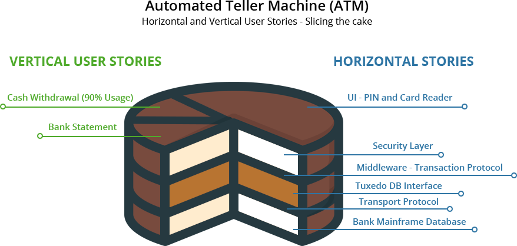
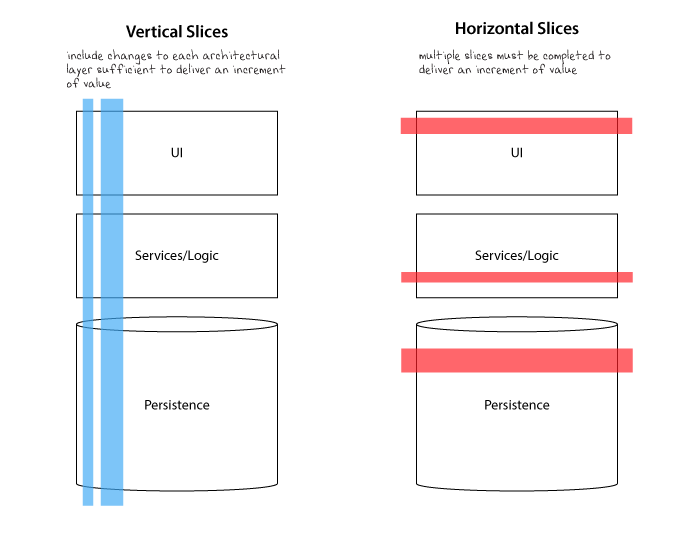
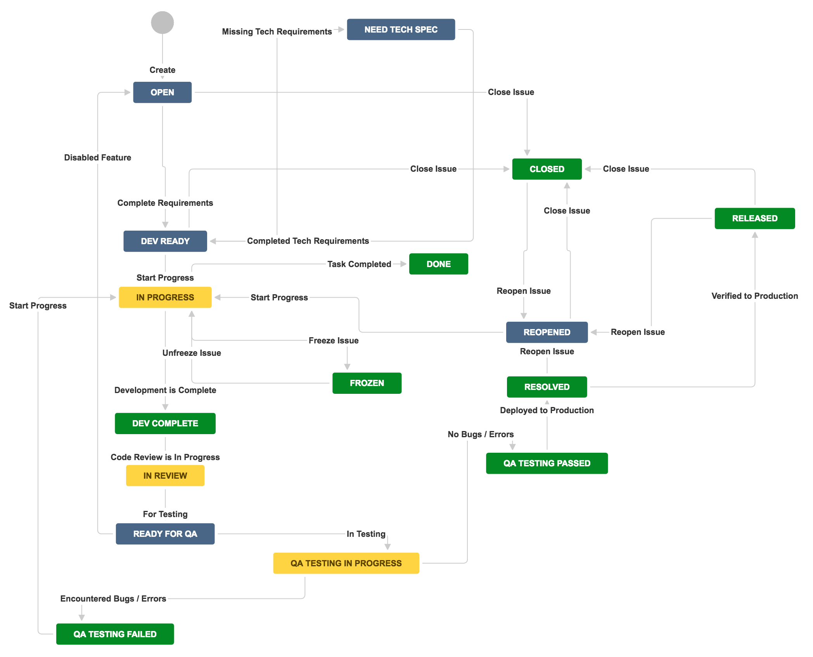
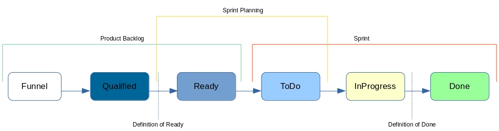
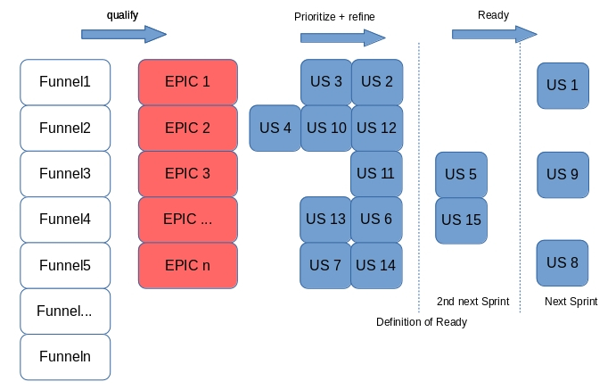

A story is an informal, natural language description of features. May be written by different stakeholders like client, user, manager, or development team.
ttych
A story is an informal, natural language description of features. May be written by different stakeholders like client, user, manager, or development team.
multiple contributions: Mike Beedle, …
2001: "Agile Software Development with Scrum" book.
2010: First version of the Scrum Guide is published.
2020: Latest release of The Scrum Guide.
fit on one card.
implemented one by one.
made from user’s perspective.
implementable in 1 week or less. + is the start for a conversation.
Card: a tangible physical token to hold the concepts.
Conversation: between all parts (details, verbal).
Confirmation: objectives of the conversation have been reached.
As a <role>, I can <capability>, So that <receive benefit>.
role / feature / reason
who / what / why
As a <role>, I want <feature>, In order to <receive benefit>.
Given some context, When some action is carried out, Then a particular set of observable consequences should obtain.
adapted to split workflow
1999: eXtreme Programming, User Stories and the planning game.
2001: 3C formula for User Story creation.
2001: Connextra format, "role / feature / reason".
2004: Generalization of the User Story principles.
2009: BDD and the Given/When/Then.
2005-2014: User Story mapping.
2010: First version of the Scrum Guide.
add
focus on the value
focus on the end-user
add visibility
add transparency
identify early
the end-user
the value
when completed
The smallest piece work that has a value to the end-user.
Statement
As a <role>,
I want <feature>,
So that <benefit>.
Description
Explanation of the user journey
Use cases
General information
Pictures
Design
Acceptence criteria
Condition to validate the implementation
WHAT (2)
Manage work
estimate
prioritize
plan
work in progress limit
Focus
end-user
business value
Collaborate
creativity
Identify
end-user (a persona)
feature (one action)
benefit (measurable)
INVEST
Independent: Standalone PBI with no dependencies.
Negotiable: It can be changed in anytime.
Valuable: Having a good value for the end-user.
Estimable: The teams is able to estimate its size.
Small: Small enough to be developed and tested.
Testable: Testing is possible from AC and DOD.
ensures the Product Backlog exists
prioritizes the user stories in the Product Backlog
Anyone can contribute/write User Stories.
during the all life of the product
refinement until Ready for sprint
from a split when necessary, on the run
User Story: add value for the product user
Technical Story: add value for the application maintainer
Bug: maintain/restore value for the product user
Debt: maintain/restore value for the product maintainer
By the Primary Stake-holder.
The one that fought for the budget.
The real Product Owner.
Define the target state.
makes money
saves money
protects money
By Incidental Stake-holder.
To achieve the vision.
Needed to go live.
Do not tend to change.
cover all region
resilient architecture
By Business Analyst.
Users can achieve a business outcome.
Partially achieve a Goal.
It still doesn’t matter how we achieve the Capability.
Do not tend to change.
user will be able to deploy on all region, the same way
a user documentation will be available for each service
By UI Designer.
Interface component which enables a capacity.
The how of the Capability.
May change.
By Developer.
A slice through a feature to enable faster feedback.
Do we understand the Capability ?
Are we delivering the Capability ?
An example of how the system might behave from a user perspective.
Ideas turning into reality.
Reduce Complexity.
Reduce Risk.
Reduce Effort.
Progressively Detailed.
Progressively Precised.
Have Item Ready for development.
Feature or User Story available
Product Owner to present the Item
Developer that will work on Item
Item in Ready state in the Backlog
Refined Item
Less Complex
Less Riksy
Less Effort
just enough for the current (and next ?) sprint
will learn from the next iteration to refine the next steps
Criteria for a User Story, to start implementation.
A feature ready to be worked on must consist of no more than 4 groomed user stories.
A user story ready to be worked on must have only one acceptance test.
Have an estimation.
Be ordered.
Provides 3 perspectives with as small a group as possible.
Product Owner : focus on business, value,
Scrum Master : focus on effectiveness,
Developer : focus on quality.
easier to understand
helps to identifying waste
provides faster feedback loop
A user story is shippable and valuable to the customer.
So when value will be delivered to the end-user ?
Vertical split (end-user focus) vs. horizontal (tech. focus) split.
HOW

HOW

common activity
collaborative activity
bring perspective, knowledge
not confortable to work with ?
too complex ?
too long (longer than 1 sprint) ?
too risky ?
Workflow
Acceptance criteria
Zero / One / Many
Happy Path / Unhappy Path
User role / Persona
Business Rules
Criteria
login
confirm order
pay order
receive order confirmation
Criteria
Try to split by acceptance criteria when possible.
Criteria / Acceptance criteria
zero item
one item
multiple item
Criteria / Acceptance criteria
login
reset password
lock account after 3 attempts
Criteria / Acceptance criteria
As a <persona1> , I want to <action>, So that <benefit>.
Criteria / Acceptance criteria
not shipping to specific country
shipping cost for specific region
lock product
cancel order after 48 hours
Refine Estimates progressively.
as Refining Story progressively
progressively refined
progressively detailed
progressively precised
Estimate
Epics
Feature
Large User-Story
Story points are the effort to do something based on the volume, risk, uncertainty and complexity of the work.
Story points
Definition of Done (as a Quality Check list)
Reference stories (Complexity, Risk, Effort)
Story points
Estimates are always inaccurate and therefore pointless.
Estimates are assumed to be important.
Estimates are padded with buffers.
Estimates are a waste of valuable time.
NoEstimate
Slicing is not based on Story points.
NoEstimate
Product Owner prioritises features.
PO slices feature into user stories.
"If feature contains more than 4 stories, it is sliced into 2 or more features".
In Sprint Planning, team creates acceptance tests for each user story.
"If there is more than 1 acceptance test, story is sliced into 2 or more stories".
Measure story cycle time, if longer than 3 days, flag for conversation.
Measure feature cycle time, if longer than is acceptable, adapt the heuristics.
Detailed
Estimated
Emergent
Prioritized
MoSCoW
WSJF
…
MVP is that version of the product which allows a team to collect the maximum amount of validated learning about customers with the least effort.
Do people want this thing ?
Will people pay for this thing ?
Is there a place for this thing in the real market ?
The Minimum Marketable Feature is the smallest unit of functionality with intrinsic market value.
is a real feature that provides tangible value to customers.
is a feature that can be marketed, sold and shipped.
the first MMR.
will incorporate the “nice to have” functionality at a later stage.
Some atomic unit of value to the market or customer.
We test a product/service with the MVP.
If the hypothesis is validated, we define the essential minimum of each of the functionalities to be delivered to reach our customers: *MMF*s.
We define the minimum delivery that we will accept to launch the product: MMR (set of MMF).
The first MMR will be considered as the minimum product that will delivery to satisfy our key users: MMP (first MMR).
No prescription on Story
Wording used: work, Product Backlog Item, Task
Product Backlog items that can be Done by the Scrum Team within one Sprint are deemed ready for selection in a Sprint Planning event. They usually acquire this degree of transparency after refining activities.
Product Backlog refinement is the act of breaking down and further defining Product Backlog items into smaller more precise items.
This is often done by decomposing Product Backlog items into smaller work items of one day or less. How this is done is at the sole discretion of the Developers.
A good Product Backlog Item has transparency.
Transparency ⇒ Inspection ⇒ Adaptation.
Epic : Large User-Story ?
Story : Smallest User-Story ?
Sub-Task: No Value

Product Backlog management
From Funnel to Ready
Sprint Planning
From Ready to To Do
Sprint Backlog management
From To Do to Done


Acceptance criteria validates the WHAT (functionnal needs).
Definition of Done validates the HOW (non-functionnal needs).